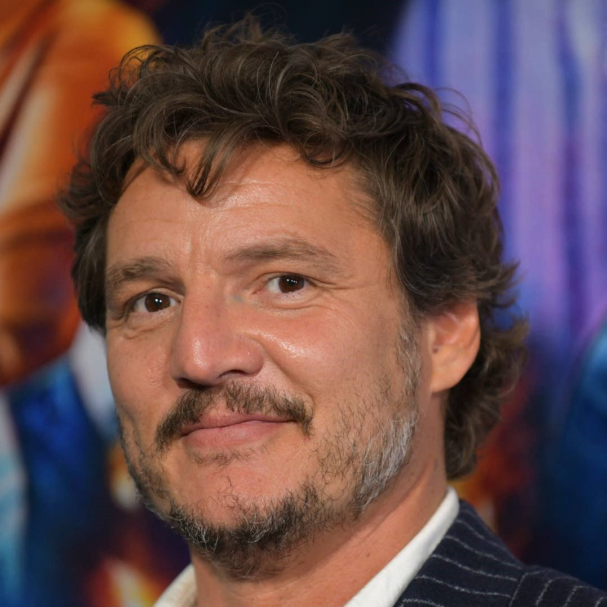

| WHY
Why is Pedro Pascal my favorite actor?
José Pedro Balmaceda Pascal is a Chilean actor. Since 2019, Pascal has starred as the title character in the Disney+ Star Wars series The Mandalorian and again in The Book of Boba Fett (2022). Since 2023, he has played Joel Miller in the HBO drama series The Last of Us, for which he received a nomination for a Primetime Emmy Award. Time magazine named him one of the 100 most influential people in the world in 2023.
LEARN MORE